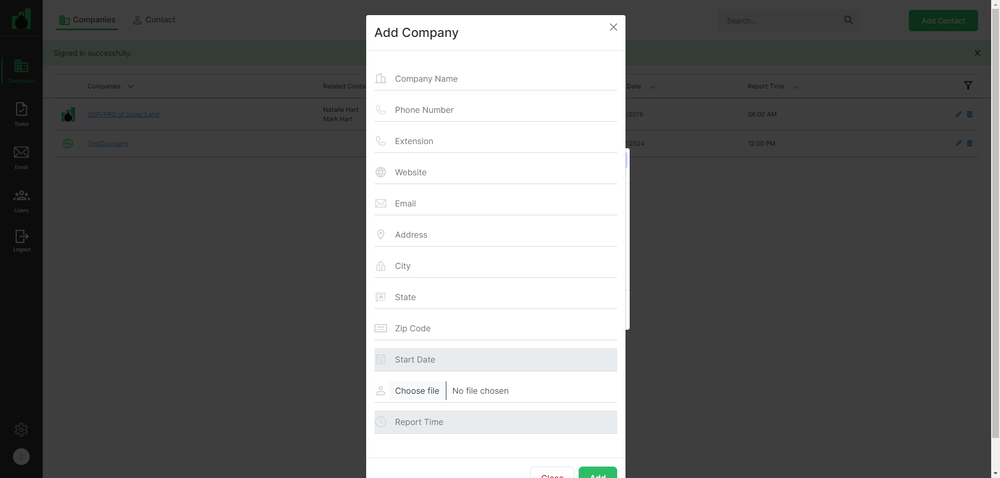

-
Companies Page Functionality
1:58:52 pm / 00:07:57:916 Fail
Companies Page Functionality
02.27.2024 1:58:52 pm 02.27.2024 2:06:50 pm 00:07:57:916 · #test-id=1Pass1. Companies page titleGiven User has already logged in to applicationusername password admin@ontrack.com Admin@12345 And User is on Companies page url "https://beta.cisin.com:4991/"Then Page title should be "OnTrack"Pass2. Companies link should be displayed in the company pageGiven User has already logged in to applicationusername password admin@ontrack.com Admin@12345 And User is on Companies page url "https://beta.cisin.com:4991/"Then "Companies" link should be displayed on sidebar in the company pagePass3. Tasks link should be displayed in the company pageGiven User has already logged in to applicationusername password admin@ontrack.com Admin@12345 And User is on Companies page url "https://beta.cisin.com:4991/"Then "Tasks" link should be displayed on sidebar in the company pagePass4. Email link should be displayed in the company pageGiven User has already logged in to applicationusername password admin@ontrack.com Admin@12345 And User is on Companies page url "https://beta.cisin.com:4991/"Then "Email" link should be displayed on sidebar in the company pagePass5. Users link should be displayed in the company pageGiven User has already logged in to applicationusername password admin@ontrack.com Admin@12345 And User is on Companies page url "https://beta.cisin.com:4991/"Then "Users" link should be displayed on sidebar in the company pagePass6. Logout button should be displayed in the company pageGiven User has already logged in to applicationusername password admin@ontrack.com Admin@12345 And User is on Companies page url "https://beta.cisin.com:4991/"Then "Logout" link should be displayed on sidebar in the company pagePass7. Setting link should be displayed in the company pageGiven User has already logged in to applicationusername password admin@ontrack.com Admin@12345 And User is on Companies page url "https://beta.cisin.com:4991/"Then setting link should be displayed on sidebar in the company pagePass8. Profile link should be displayed in the company pageGiven User has already logged in to applicationusername password admin@ontrack.com Admin@12345 And User is on Companies page url "https://beta.cisin.com:4991/"Then profile icon should be displayed on sidebar in the company pagePass9. Comapnies tab should be displayed in the company pageGiven User has already logged in to applicationusername password admin@ontrack.com Admin@12345 And User is on Companies page url "https://beta.cisin.com:4991/"Then "companies" tab should be displayed in the company pagePass10. Contact tab should be displayed in the company pageGiven User has already logged in to applicationusername password admin@ontrack.com Admin@12345 And User is on Companies page url "https://beta.cisin.com:4991/"Then "contact" tab should be displayed in the company pagePass11. SearchBox should be displayed in the company pageGiven User has already logged in to applicationusername password admin@ontrack.com Admin@12345 And User is on Companies page url "https://beta.cisin.com:4991/"Then Search field should be displayed in the company pagePass12. Add Contact button should be displayed in the company pageGiven User has already logged in to applicationusername password admin@ontrack.com Admin@12345 And User is on Companies page url "https://beta.cisin.com:4991/"Then add contact button should be displayed in the company pagePass13. Add Contact title should be displayed in the add contact popupGiven User has already logged in to applicationusername password admin@ontrack.com Admin@12345 And User is on Companies page url "https://beta.cisin.com:4991/"When user should be clicked on AddContact button in the company pageThen "Add Contact" title should be displayed in the add contact popupPass14. Add company button should be displayed in the add contact popupGiven User has already logged in to applicationusername password admin@ontrack.com Admin@12345 And User is on Companies page url "https://beta.cisin.com:4991/"When user should be clicked on AddContact button in the company pageThen Add company button should be displayed in the add contact popupPass15. Add contact button should be displayed in the add contact popupGiven User has already logged in to applicationusername password admin@ontrack.com Admin@12345 And User is on Companies page url "https://beta.cisin.com:4991/"When user should be clicked on AddContact button in the company pageThen Add contact button should be displayed in the add contact popupPass16. Reset button should be displayed in the add contact popupGiven User has already logged in to applicationusername password admin@ontrack.com Admin@12345 And User is on Companies page url "https://beta.cisin.com:4991/"When user should be clicked on AddContact button in the company pageThen Reset button should be displayed in the add contact popupPass17. user should be able to close Add contact popup successfully in the company pageGiven User has already logged in to applicationusername password admin@ontrack.com Admin@12345 And User is on Companies page url "https://beta.cisin.com:4991/"When user should be clicked on AddContact button in the company pageAnd user should be clicked on Reset button in the add contact popupThen Add contact popup close successfully in the company pagePass18. User should be able to add contact popup close successfully by click on close IconGiven User has already logged in to applicationusername password admin@ontrack.com Admin@12345 And User is on Companies page url "https://beta.cisin.com:4991/"When user should be clicked on AddContact button in the company pageAnd User should be closed the add contact popup in the company pageThen add contact popup close successfully by click on close Icon in the company pagePass19 User should be clicked on Add Contact button in the pageGiven User has already logged in to applicationusername password admin@ontrack.com Admin@12345 And User is on Companies page url "https://beta.cisin.com:4991/"When user should be clicked on AddContact button in the company pageAnd User should be clicked on Add Company button in the add contact popup of the company pageThen user should able to see the add company popup in the company pagePass20. User should be able to create the Company in the add company popupGiven User has already logged in to applicationusername password admin@ontrack.com Admin@12345 And User is on Companies page url "https://beta.cisin.com:4991/"When user should be clicked on AddContact button in the company pageAnd User should be clicked on Add Company button in the add contact popup of the company pageAnd User should be enter the fields for the company in the add company popupcompanyname phonenumber ext website email address city state zipcode sdate TestCompany 9874563210 9 www.google.com support@ontrack-financial.com 29-2-20, Rama Mandiram St, Venkateswara Rao St, Governor Peta Vijayawada Andhra Pradesh 520002 February 17, 2024 Then User should be able to see the company from company list"TestCompany"Pass21. user should be able to close the add company popup successfullyGiven User has already logged in to applicationusername password admin@ontrack.com Admin@12345 And User is on Companies page url "https://beta.cisin.com:4991/"When user should be clicked on AddContact button in the company pageAnd User should be clicked on Add Company button in the add contact popup of the company pageAnd User should be clicked on Close button in the add company popupThen user should be able to close the add company popup successfullyPass22. User should see an validation message on company name field the add company popupGiven User has already logged in to applicationusername password admin@ontrack.com Admin@12345 And User is on Companies page url "https://beta.cisin.com:4991/"When user should be clicked on AddContact button in the company pageAnd User should be clicked on Add Company button in the add contact popup of the company pageAnd click on add button in the add company popupThen User should see an validation message on company name field "Company name can't be blank."Pass23. User should see an validation message on phone number field in the add company popupGiven User has already logged in to applicationusername password admin@ontrack.com Admin@12345 And User is on Companies page url "https://beta.cisin.com:4991/"When user should be clicked on AddContact button in the company pageAnd User should be clicked on Add Company button in the add contact popup of the company pageAnd click on add button in the add company popupThen User should see an validation message on phone number field"Phone number can't be blank."Pass24. User should see an validation message on address field in the add company popupGiven User has already logged in to applicationusername password admin@ontrack.com Admin@12345 And User is on Companies page url "https://beta.cisin.com:4991/"When user should be clicked on AddContact button in the company pageAnd User should be clicked on Add Company button in the add contact popup of the company pageAnd click on add button in the add company popupThen User should see an validation message on address "Address can't be blank."Pass25. User should see an validation message on city field in the add company popupGiven User has already logged in to applicationusername password admin@ontrack.com Admin@12345 And User is on Companies page url "https://beta.cisin.com:4991/"When user should be clicked on AddContact button in the company pageAnd User should be clicked on Add Company button in the add contact popup of the company pageAnd click on add button in the add company popupThen User should see an validation message on city "City can't be blank."Pass26. User should see an validation message on state field in the add company popupGiven User has already logged in to applicationusername password admin@ontrack.com Admin@12345 And User is on Companies page url "https://beta.cisin.com:4991/"When user should be clicked on AddContact button in the company pageAnd User should be clicked on Add Company button in the add contact popup of the company pageAnd click on add button in the add company popupThen User should see an validation message on state "State can't be blank."Fail27. User should see an validation message on zipcode field in the add company popupGiven User has already logged in to applicationusername password admin@ontrack.com Admin@12345 And User is on Companies page url "https://beta.cisin.com:4991/"When user should be clicked on AddContact button in the company pageAnd User should be clicked on Add Company button in the add contact popup of the company pageAnd click on add button in the add company popupThen User should see an validation message on zipcode "Zip code can't be blank."AppHooks.ApplicationHooks.tearDown(io.cucumber.java.Scenario)27._User_should_see_an_validation_message_on_zipcode_field_in_the_add_company_popupPass28. User should see an validation message on start date field in the add company popupGiven User has already logged in to applicationusername password admin@ontrack.com Admin@12345 And User is on Companies page url "https://beta.cisin.com:4991/"When user should be clicked on AddContact button in the company pageAnd User should be clicked on Add Company button in the add contact popup of the company pageAnd click on add button in the add company popupThen User should see an validation message on start date "Start date can't be blank."Pass29. User should see an validation message on report time field in the add company popupGiven User has already logged in to applicationusername password admin@ontrack.com Admin@12345 And User is on Companies page url "https://beta.cisin.com:4991/"When user should be clicked on AddContact button in the company pageAnd User should be clicked on Add Company button in the add contact popup of the company pageAnd click on add button in the add company popupThen User should see an validation message on report time "Report time can't be blank."Pass30. User should be searched a company in the company pageGiven User has already logged in to applicationusername password admin@ontrack.com Admin@12345 And User is on Companies page url "https://beta.cisin.com:4991/"When User should be searched a company "TestCompany" in the company pageAnd User click on search button in the company pageThen User should be searched a company in the company pagePass31. User should be update company name in the edit item popupGiven User has already logged in to applicationusername password admin@ontrack.com Admin@12345 And User is on Companies page url "https://beta.cisin.com:4991/"When User should be searched a company "TestCompany" in the company pageAnd User click on search button in the company pageAnd User should be click on edit button in the company pageAnd user should be upadted company name"Test Company" in the edit item popupAnd User should be click on update button in the edit item popupThen user should see the updated company in the company page"Test Company"Pass32. User should be able to see Add Contact popup title in the add contact popupGiven User has already logged in to applicationusername password admin@ontrack.com Admin@12345 And User is on Companies page url "https://beta.cisin.com:4991/"When user should be clicked on AddContact button in the company pageAnd User should be clicked on Add contact button of companyThen User should be able to see Add Contact popup title in the add contact popupPass33. User should see an validation message for First NameGiven User has already logged in to applicationusername password admin@ontrack.com Admin@12345 And User is on Companies page url "https://beta.cisin.com:4991/"When user should be clicked on AddContact button in the company pageAnd User should be clicked on Add contact button of companyAnd User should be clicked on add button in the add contact popup of the companyThen User should see an validation message for First Name"First name can't be blank."Pass34. User should see an validation message for Last NameGiven User has already logged in to applicationusername password admin@ontrack.com Admin@12345 And User is on Companies page url "https://beta.cisin.com:4991/"When user should be clicked on AddContact button in the company pageAnd User should be clicked on Add contact button of companyAnd User should be clicked on add button in the add contact popup of the companyThen User should see an validation message for Last Name"Last name can't be blank."Pass35. User should see an validation message for Title NameGiven User has already logged in to applicationusername password admin@ontrack.com Admin@12345 And User is on Companies page url "https://beta.cisin.com:4991/"When user should be clicked on AddContact button in the company pageAnd User should be clicked on Add contact button of companyAnd User should be clicked on add button in the add contact popup of the companyThen User should see an validation message for Title Name"Title must exist."Pass36. User should see an validation message for Company NameGiven User has already logged in to applicationusername password admin@ontrack.com Admin@12345 And User is on Companies page url "https://beta.cisin.com:4991/"When user should be clicked on AddContact button in the company pageAnd User should be clicked on Add contact button of companyAnd User should be clicked on add button in the add contact popup of the companyThen User should see an validation message for Company Name"Company ids can't be blank."Pass37. Validate user should be able to add title for contact title widget for the company pageGiven User has already logged in to applicationusername password admin@ontrack.com Admin@12345 And User is on Companies page url "https://beta.cisin.com:4991/"When user should be able to click on Settings for the company pageAnd user should be able to click on add title button in contact title widget for the company pageAnd user should enter the title in add title popup of contact title widget for the company page"Automate Admin"Then user should be able to see the title on contact title widget for the company page"Automate Admin"Pass38. User should be able create contactGiven User has already logged in to applicationusername password admin@ontrack.com Admin@12345 And User is on Companies page url "https://beta.cisin.com:4991/"When user should be clicked on AddContact button in the company pageAnd User should be clicked on Add contact button of companyAnd User should be enter the fields for the contactfirstname lastname title email phonenumber company Test Contact Automate Admin Amit@gmail.com 9856321047 Test Company Then user should be see the contact name in the company list page"Test Contact"Pass39. user should be able to filtered company in the company pageGiven User has already logged in to applicationusername password admin@ontrack.com Admin@12345 And User is on Companies page url "https://beta.cisin.com:4991/"When user should be filtered company in the company pagecompany contact Test Company Test Contact Then user should be able to see the company which is filtered"Test Company"Pass40. User should be able to select company from company listGiven User has already logged in to applicationusername password admin@ontrack.com Admin@12345 And User is on Companies page url "https://beta.cisin.com:4991/"When user should be able to select company in the company pageThen User should see the Company Name "Test Company"
-
org.openqa.selenium.NoSuchElementException
1 tests
org.openqa.selenium.NoSuchElementException
1 failedStatus Timestamp TestName Fail 14:03:41 pm Then User should see an validation message on zipcode "Zip code can't be blank." Companies Page Functionality.27. User should see an validation message on zipcode field in the add company popup.Then User should see an validation message on zipcode "Zip code can't be blank."
Started
Feb 27, 2024 01:58:51 pm
Ended
Feb 27, 2024 02:06:50 pm
Features Passed
0
Features Failed
1
Features
Scenarios
Steps
Timeline